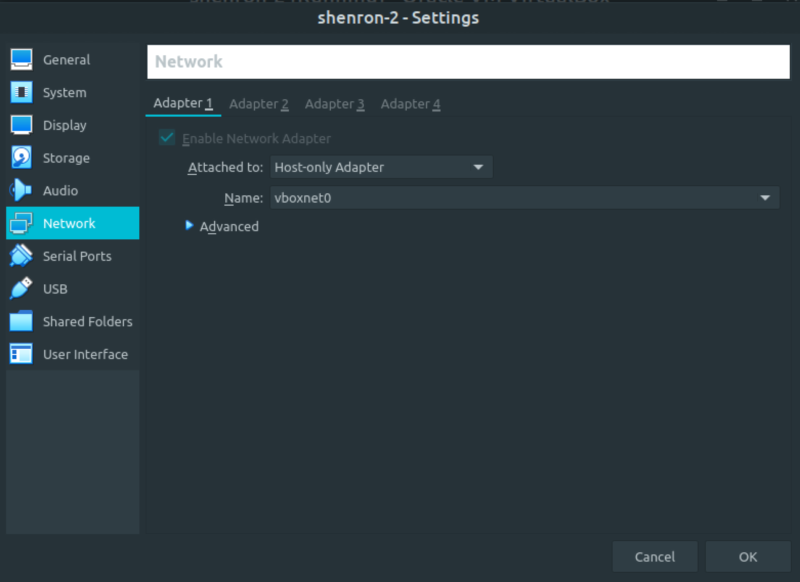
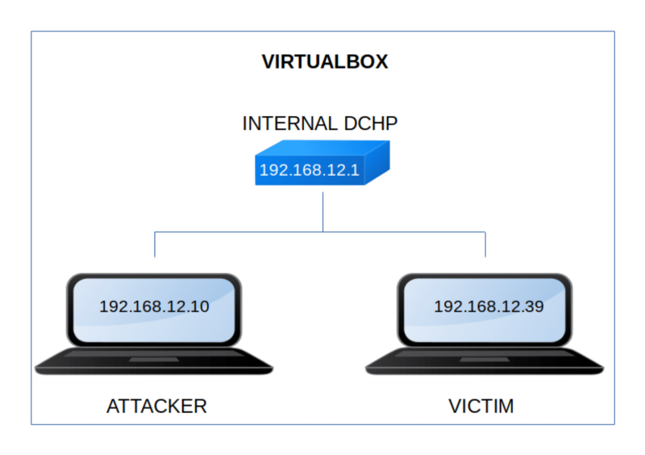

Shenron 2
▸ Shenron 2
▸ 1. Scan Network
▸ 2. Finding Services and Ports
▸ 3. Enumerate
▸ 3.1 Wpscan
▸ 4. Explotiation
▸ 4.1 LFI
▸ 4.2 Find SSH password with hydra
▸ 4.3 Look for utilities to run as root
▸ 4.4 Catch shenron's flag
▸ 5. Privilege Escalation
▸ 5.1 Decrypting the pass
▸ 5.2 Swith to shenron user
▸ 5.3 Switch to root (2nd flag)
Difficulty: Easy.
Flag: 2 flags.
Learning:
• Reconnaissance
Scan Network
Find services
• Enumerate
Add hostname to /etc/hosts
Webscan
• Exploitation
LFI
Find password with “hydra”
Look for utilities to run as “root”
• Privilege Escalation
Decrypting “base32” pass
Switch user
Check for user's permissions
Switch to “root”
• Download (Mirror): https://download.vulnhub.com/shenron/shenron-2.ova
• Download (Torrent): https://download.vulnhub.com/shenron/shenron-2.ova.torrent
Install the machine on VirtualBox:
1. Download the file.
2. On Virtualbox choose File->Import Appliance.
3. Select the file “ova”.
4. Accept to import.


Watch your Machine IP.
$ ifconfig
Output:

Diagram
